地政学
ゴマはキブ湖、ルワンダ国境、北キブ州の行政、人道支援、武装勢力の前線が交わる都市です。国境ゲート、空港、湖上輸送、援助機関の判断が、東部コンゴの生活と安全保障を毎日左右します。要衝です。緊張も近い街です。
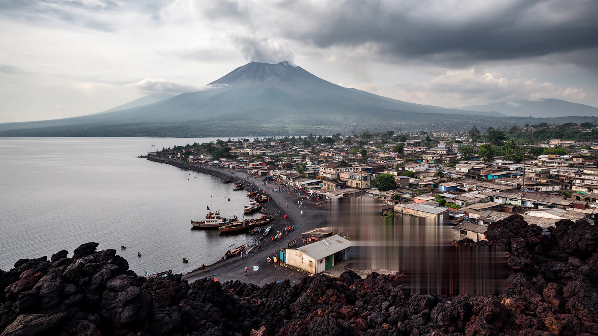
🇨🇩 コンゴ民主共和国 / 北キブ州 / World City Atlas
キブ湖の北岸、ルワンダ国境とニーラゴンゴ火山の間に広がる東部コンゴの要衝。国境貿易、避難民、人道支援、火山災害、鉱物経済、若者文化が、黒い溶岩の街路で重なります。
都市の骨格
ゴマは観光地の湖畔都市である前に、東部コンゴの避難、商業、軍事、援助、教育、移動が集まる境界都市である。黒い溶岩の地面、ルワンダへ続く道路、空港、港、市場、キャンプが、日常の選択肢を決めている。
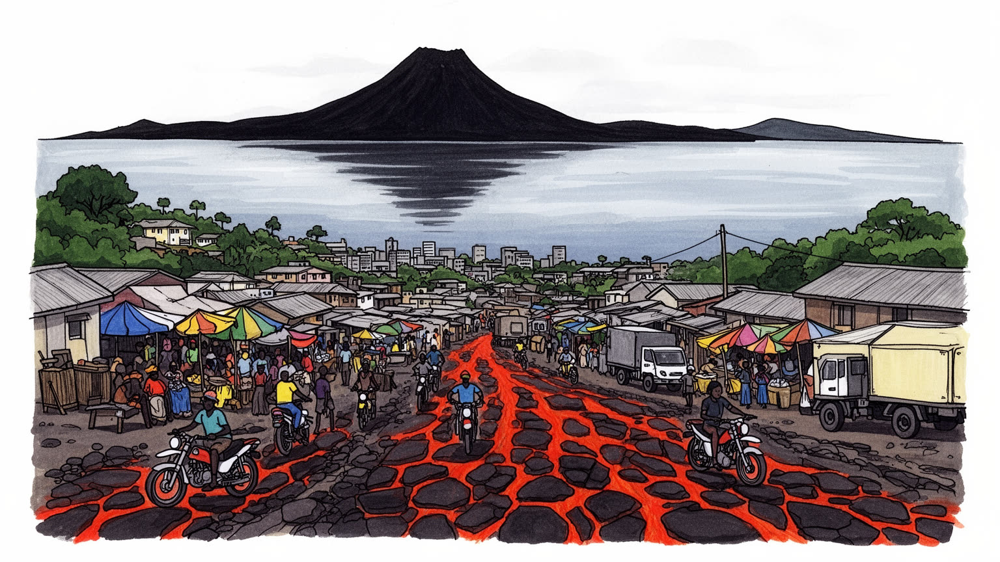
ゴマはキブ湖、ルワンダ国境、北キブ州の行政、人道支援、武装勢力の前線が交わる都市です。国境ゲート、空港、湖上輸送、援助機関の判断が、東部コンゴの生活と安全保障を毎日左右します。要衝です。緊張も近い街です。
国境商業、農産物取引、建設、運輸、バイクタクシー、NGO、ホテル、小売が雇用を作ります。鉱物経済の影も濃く、公式の仕事と露店、日雇い、通訳、倉庫作業が近接します。生活は機敏です。家計も揺れます。現金が要です。
スワヒリ語、キニャルワンダ語、教会、合唱、若者音楽、湖畔の余暇が交差します。避難と移住の経験は家族の記憶を変え、祈り、学校、食卓、葬儀が不安定な時代の支えになります。声が街を結ぶ場です。希望もここに残る。
旅行者はキブ湖、ヴィルンガ山地、火山景観に惹かれますが、住民は治安、家賃、水、停電、学校、避難、物価と向き合います。湖畔の美しさと危機の近さが同じ日常にあります。慎重に歩く街です。暮らしの知恵も濃い。
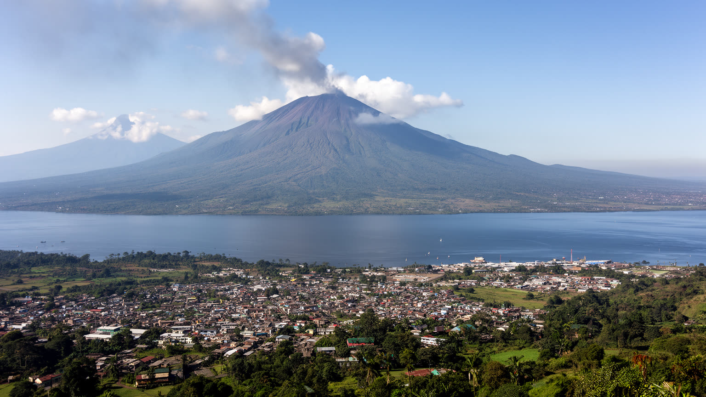
ゴマの第一印象は、キブ湖の穏やかな水面と、背後に迫るヴィルンガ火山群の緊張が同居する風景である。標高の高い湖畔にあるため赤道近くでも空気は比較的涼しく、夕方には湖風が街路を抜ける。しかし、その美しさは安全な背景ではない。ニーラゴンゴ火山は二〇〇二年と二〇二一年の噴火で市街へ溶岩を流し、黒い岩盤は今も道路、家、教会、市場の足元に残る。湖は漁業、港、観光、国境を越える移動を支える一方、湖底に溶け込むガスへの警戒も必要とする。ゴマでは自然環境が観光資源であると同時に、避難計画、土地利用、住宅の安全、道路の耐久性を決める都市条件になっている。火山を遠くから眺めるだけなら壮大だが、住民にとっては家を建てる場所、子どもが通う道、商店の在庫、病院へのアクセスまで左右する存在である。湖と火山の間にある狭い市街は、災害時に逃げる方向が限られ、国境や空港の機能にも強く依存する。ゴマを読むには、風景の美しさと危険を切り離さず、水、火、岩が日常の選択肢をどう狭め、同時に都市の記憶をどう作ってきたかを見る必要がある。溶岩の上で暮らすことは、破壊の跡を生活の地面へ変える作業でもある。湖畔の宿や遊歩道が穏やかに見えるほど、その背後で観測、避難訓練、家族の備蓄が続く現実も重要になる。地形はこの街の魅力であり、最も厳しい制約でもある。
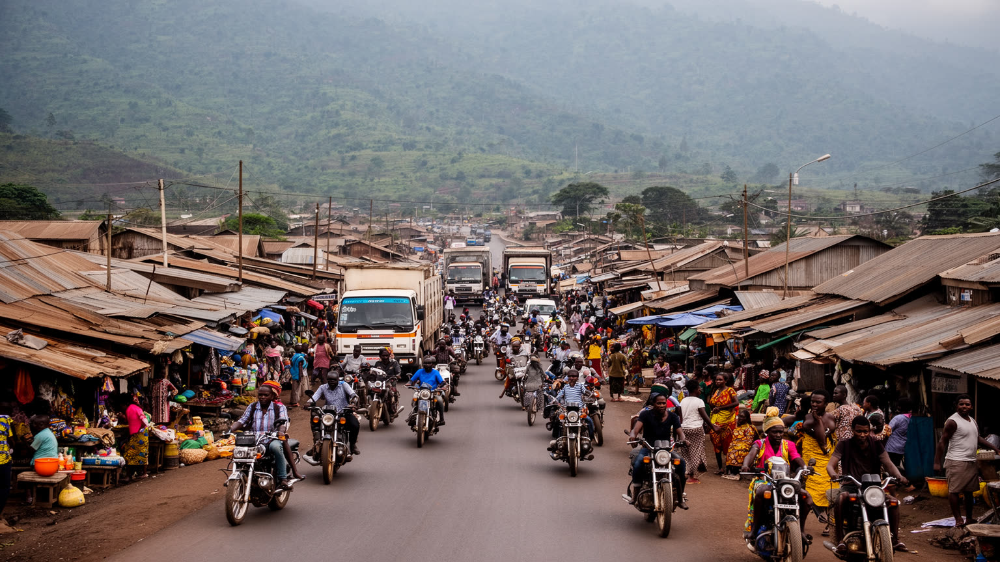
ゴマはルワンダのギセニとほとんど連続した都市圏を作り、国境ゲートは生活のリズムそのものになっている。人びとは食料、燃料、建材、携帯電話、衣料、医療、教育、銀行サービス、親族訪問のために境界を意識しながら動く。国境は地図の線ではなく、早朝の列、通関書類、小さな手数料、為替、検問、荷物を背負う女性、バイクタクシーの交渉として現れる。公式貿易だけでなく、小規模な越境商人が都市の食卓と店先を支え、ルワンダ側の道路やサービス水準との比較も住民の判断に影響する。政治的緊張が高まれば、同じ国境は商売の機会から不安の線へ変わる。閉鎖、規制、治安情報、武装勢力の動きは、米や豆の価格、ホテルの予約、援助物資の搬入、家族の面会まで揺らす。ゴマの経済は、鉱物や援助資金だけではなく、この細かな国境の往来で成り立つ。境界を越える力は都市を外へ開くが、同時に誰が通れるか、何を持ち込めるか、どの身分証が認められるかという不平等も作る。国境都市としてのゴマを見ると、国家間関係が抽象的な外交ではなく、商人の朝の売上、学生の通学、患者の移動、運転手の待ち時間として毎日計算されていることが分かる。境界の混雑は、街の不安と生命力を同時に示している。日々の小さな往来が止まるだけで、家庭の食卓と店の棚はすぐに変わる。現金の流れも細る。
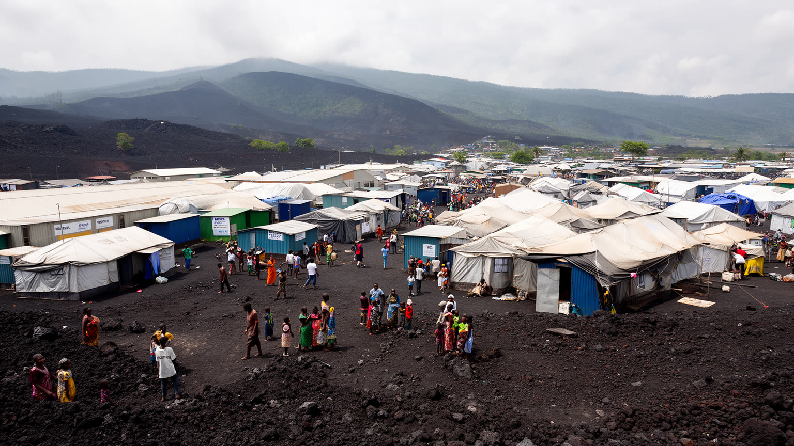
ゴマは東部コンゴの人道支援を考える時、避けて通れない都市である。空港、湖上輸送、倉庫、国際機関、NGO、教会、診療所、ホテル、通信会社が集まり、周辺地域で戦闘や災害が起きるたびに、人、物資、情報、資金がここを通る。街の外縁や周辺には避難民が増え、学校や市場、給水、医療、衛生、治安の負担が急に大きくなる。援助は命をつなぐが、同時に都市経済の一部にもなる。通訳、運転手、警備員、事務職、倉庫作業、宿泊、レストラン、賃貸住宅が援助機関の存在に影響され、英語やフランス語の能力が雇用の差を広げることもある。避難民にとってゴマは安全な終着点ではなく、いつ戻れるか分からない生活を組み直す場所である。家族は土地、家畜、学校、商売を失い、狭い敷地で水や食料を探し、子どもの教育を途切れさせないようにする。人道都市を読むには、白い車両やテントだけでなく、受け入れる住民の家賃上昇、井戸の混雑、地域の緊張、支援の届かない人びとの焦りも見る必要がある。ゴマの強さは、危機に慣れてしまったことではなく、危機の中でも店を開け、学校を再開し、家族を守ろうとする日常の粘りにある。援助の都市は、外から来る支援と内側の相互扶助が交差する場所である。支援が長期化するほど、緊急対応と普通の都市行政をどう結び直すかも問われる。制度も試される。
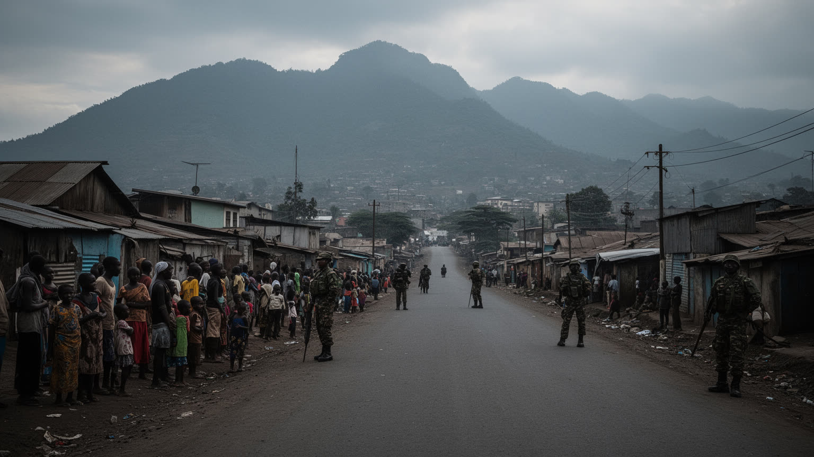
ゴマの名前は、しばしば東部コンゴの紛争と結びついて世界へ届く。周辺では武装勢力、国軍、地域政治、鉱物資源、土地問題、隣国との関係が複雑に絡み、戦闘の波は都市の近くまで繰り返し押し寄せてきた。住民にとって紛争はニュースの出来事ではなく、避難、親族の安否、学校閉鎖、検問、夜間外出の不安、物価上昇、仕事の中断として記憶される。安全を求めて流入した人びとが増えれば、都市は大きくなるが、住宅、雇用、水、土地の圧力も増す。紛争の記憶は、公共空間の使い方にも影を落とす。集会、葬儀、教会の祈り、ラジオの声、スマートフォンの警報、道路の噂が、街の雰囲気を変える。外からは被害の場所として一括りにされがちだが、ゴマには政治を語り、音楽を作り、学校を続け、商売を再開する市民社会もある。暴力の説明だけで都市を見ると、人びとの主体性が消えてしまう。とはいえ、前線の近さを無視した明るい都市像もまた不誠実である。ゴマを読むには、紛争が家族史、土地、言語、商業、若者の進路をどう変えてきたかを見ながら、それでも日常を守るために交渉し続ける住民の判断を理解する必要がある。平和は遠い合意文書だけでなく、翌朝に市場へ行ける安心として求められている。記憶を語ることは、恐怖を固定するためではなく、再発を防ぎ生活を守る条件を考えるためである。
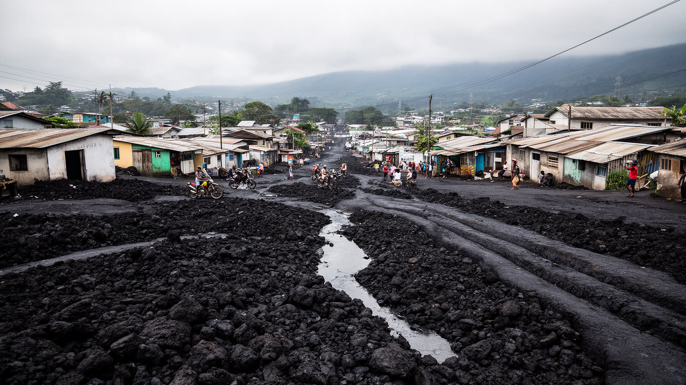
ゴマの街路を特徴づけるのは、噴火で流れ込んだ黒い溶岩の質感である。硬い岩盤は道路を荒くし、排水や建設を難しくする一方、住民はその上に家を建て、店を開き、学校や教会を再建してきた。二〇〇二年の噴火では市街の大きな部分が壊れ、空港の滑走路や住宅地も影響を受けた。二〇二一年にも避難と破壊が起き、火山が都市計画の外側にある自然ではなく、街の内部を作り替える力だと再確認された。溶岩の都市形態は、災害の記憶を景観に固定するだけではない。土地の境界、建物の基礎、雨水の流れ、歩行者の足元、バイクの修理費、障害のある人の移動にまで影響する。きれいな舗装や排水路が整えば暮らしは楽になるが、予算や治安、人口増加の圧力で整備は追いつきにくい。黒い地面の上では、都市の不平等も見えやすい。頑丈な壁を作れる家と、仮設の小屋に住む家では、次の災害への備えが違う。ゴマの都市形態を読むことは、火山が壊したものだけでなく、住民がどのように破片を片づけ、石を積み、生活の通路を作り直したかを読むことでもある。溶岩は危険の痕跡であり、同時に再建の土台である。街はその硬さに合わせて、ゆっくり形を変えている。住宅地の小さな段差や店先の石積みまで、災害後の工夫が見える。都市計画は大きな図面だけでなく、毎日の歩きにくさを減らす細部から始まる。
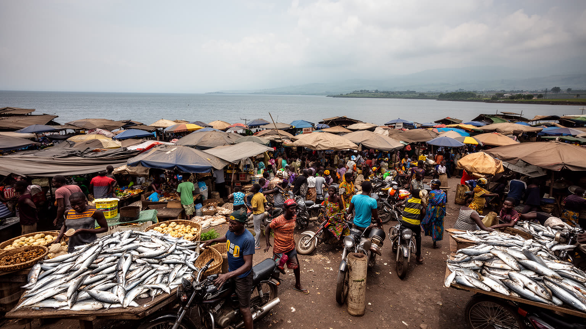
ゴマの経済は、統計に表れにくい小さな仕事の集まりで動いている。市場には豆、キャッサバ、バナナ、魚、木炭、衣料、携帯電話、修理部品、薬、日用品が並び、周辺の農村、ルワンダ側、湖上輸送、援助機関の需要が複雑に交わる。商人、荷運び、倉庫番、両替、露店、食堂、バイクタクシー、建設労働、家事労働は、都市の物価と雇用を支えるが、多くは不安定で保護が薄い。紛争や道路封鎖が起きると、食料の到着が遅れ、価格はすぐ上がる。火山灰や雨で道が悪くなれば、商品を運ぶ時間も費用も増える。市場は活気ある風景であると同時に、家計の緊張が最も早く現れる場所でもある。女性商人は家族を支え、越境取引や小口販売で現金を作るが、検問、盗難、差別、保育の不足に向き合う。若者は通訳や配達、携帯修理、音楽、映像、支援機関の短期雇用に機会を探す。ゴマを鉱物紛争や援助の都市としてだけ見ると、この日々の市場労働が見えなくなる。都市の耐久力は、大きな企業よりも、毎朝仕入れをし、値段を交渉し、売れ残りを抱えながら家へ戻る人びとの判断に支えられている。市場のざわめきは、危機の中で暮らしを続けるための実務の音である。小さな利益を何度も回す商いは、家賃、学費、薬代を支える。そこに都市経済の最も具体的な顔がある。値札の変化は、遠い前線や雨の影響まで映す。
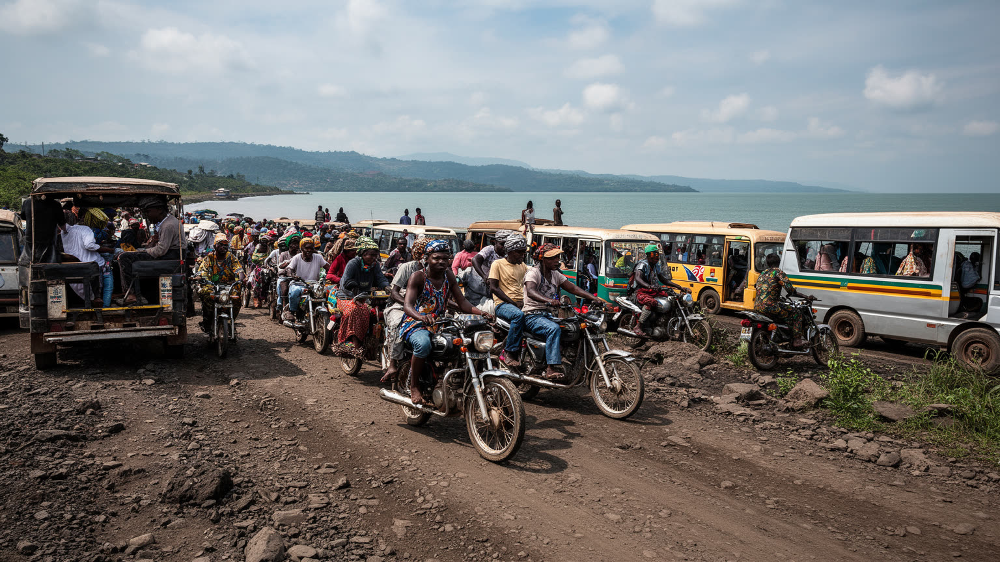
ゴマの日常移動は、道路の状態とバイクタクシーに大きく依存している。市街は広く、避難民の居住地、学校、市場、国境、空港、港、行政機関、病院が離れているため、徒歩だけでは生活の範囲が限られる。バイクは狭い道や混雑を抜け、荷物や人を素早く運ぶが、事故、燃料費、警察や検問での交渉、雨季の泥道、溶岩の凹凸が負担になる。道路整備は都市の見栄えだけではなく、救急車、食料輸送、避難、通学、出産、援助物資の配布に直結する。空港は人道支援と政治の要であり、湖上輸送は道路が危険な時の別経路にもなるが、それぞれ天候、治安、施設能力に左右される。交通の弱さは、貧しい世帯ほど重くのしかかる。学校まで遠い子ども、早朝に市場へ向かう商人、病院へ急ぐ家族、障害のある人にとって、道路の穴や運賃の上昇は機会の喪失になる。ゴマの移動を読むには、地図上の距離だけでなく、検問を通る心理的な負担、燃料価格、夜間の安全、国境の開閉を考える必要がある。バイクの音は騒がしいが、それは都市がまだ動いている証でもある。舗装、照明、排水、交通ルール、運転手の安全が整えば、ゴマの経済と日常は少しずつ広い範囲へ開かれる。移動が安く安全になるほど、仕事、学校、診療所、親族の助けに届く人が増える。交通は都市の公平を測る物差しでもある。道は生活圏を決める。
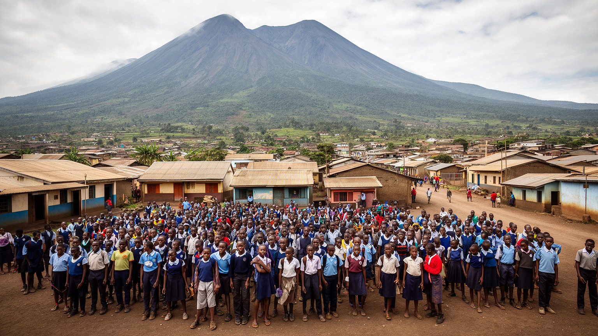
ゴマは若い都市である。教室、大学、教会の合唱、スポーツ場、音楽イベント、携帯電話の店、インターネットカフェには、紛争と災害の中でも進路を探す若者の姿がある。教育は家族にとって最も重要な投資の一つだが、学費、教材、通学、治安、避難、学校の過密は重い負担になる。周辺から逃れてきた子どもは、学年の中断や言語環境の変化に直面し、教師や地域団体は限られた資源で学びをつなごうとする。若者の仕事は十分ではなく、支援機関の短期雇用、通訳、バイクタクシー、建設、商売、音楽、映像制作、宗教活動などを組み合わせて生活する人も多い。ゴマの若者文化は、被害だけで語れない。アマニ・フェスティバルのような平和と音楽の試み、教会や市民団体の活動、大学での議論、スマートフォンを使った情報発信は、都市を外へ伝える力を持つ。一方で、長い不安定さは、武装勢力への勧誘、国外への移動願望、政治への不信、心の傷も生む。教育を守ることは、教室を開けるだけではない。安全な通学路、家庭の収入、心理的支援、女子の学び、職業訓練、地域の雇用がつながって初めて意味を持つ。ゴマの未来は、危機を知りすぎた若者が、危機だけではない都市の物語を作れるかにかかっている。学ぶ場所は、次の生活を想像する場所でもある。若者の声を公共の場へ戻すことが、平和の基礎にもなる。
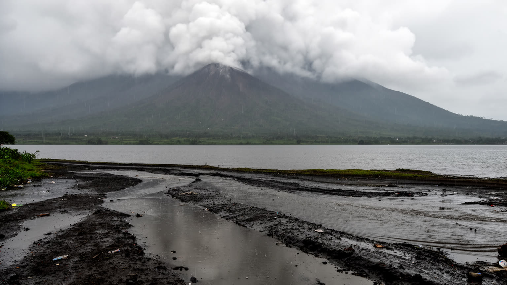
ゴマの災害リスクは、火山だけで完結しない。雨季には排水の弱い道路や斜面、仮設住宅、避難民の居住地がぬかるみ、洪水、土砂、感染症、交通事故の危険が増える。乾季でも火山灰、粉じん、水不足、湖畔の衛生、廃棄物処理は健康に関わる。気候変動は降雨の激しさや農産物流通にも影響し、周辺農村の不作や道路の寸断は市場価格を押し上げる。災害への備えは警報だけでは足りない。安全な土地、排水路、避難路、学校や教会の避難所、水と衛生、医療、情報の言語、国境を越える協力がそろわなければ、危険は貧しい世帯に集中する。火山観測や湖のガス監視は専門的な仕事だが、住民が信頼できる形で情報を受け取れなければ、避難の判断は遅れる。ゴマでは自然災害と紛争が重なるため、避難先が安全とは限らず、移動そのものが危険になることもある。気候と災害の都市として見ると、ゴマの課題は単なる防災施設の不足ではなく、長期の不安定さの中で誰が安全な場所を選べるのかという公平の問題である。湖の美しさ、火山の迫力、涼しい高地の気候は、同時に脆さを抱える。日常の排水溝を掃除し、道路を直し、情報を共有する地味な作業が、次の危機で命を守る基礎になる。災害に強い都市は、危険が来る前の平凡な管理を軽く見ない都市でもある。備えは暮らしの習慣になる。近所の連絡網も命を守る。
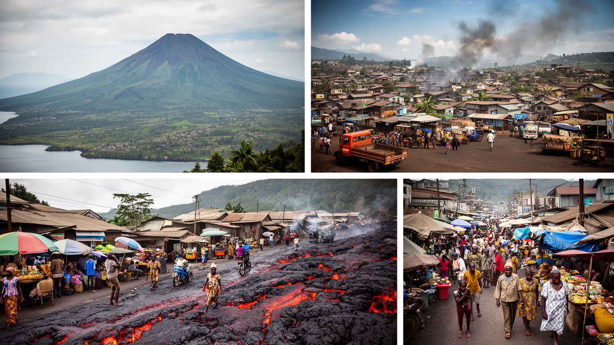
ゴマを一つの言葉で説明することはできない。湖畔の美しい都市であり、火山災害の都市であり、ルワンダ国境の商業都市であり、東部コンゴの人道支援拠点であり、紛争の前線に近い生活都市でもある。外からの視線はしばしば危機だけを強調するが、ゴマには市場を動かす商人、学校へ通う子ども、教会で歌う人びと、湖畔で休む家族、道路を走る運転手、支援を受けながらも自分の生活を組み直す避難民がいる。都市の力は、統計の大きさよりも、破壊の後に再び店を開ける能力、国境の変化に合わせて商売を続ける機敏さ、若者が学びと表現の場を探す粘りに表れる。一方で、その生活力を美談にしてはならない。治安、貧困、家賃、水、教育、医療、災害、政治的不安は、住民の選択肢を狭め続けている。ゴマを読むことは、キブ湖の光と黒い溶岩、国境の活気と検問の緊張、援助の車両と市場の自助努力を同じ地図に置くことである。そうして初めて、この街は単なる被災地でも紛争地でもなく、中央アフリカ大湖地域の歴史、移動、危機管理、日常の創造力が交差する都市として見えてくる。危険の近さを知りながら普通の朝を始める人びとの判断が、ゴマという都市の輪郭を作っている。この街を理解する視線には、同情だけでなく、複雑な現実を読み分ける敬意が必要である。湖畔の静けさにも、その複雑さが映る。